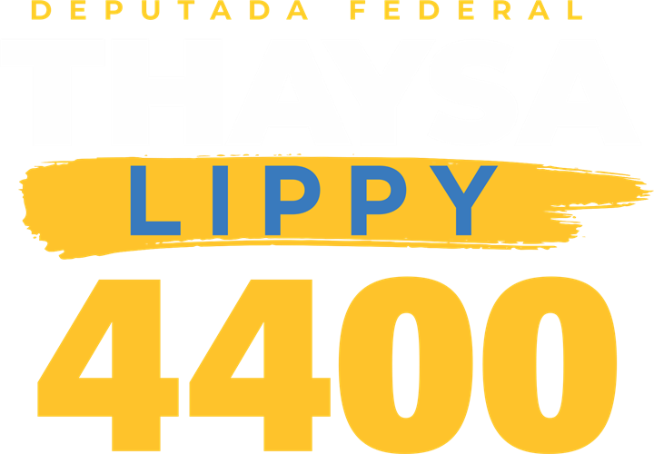
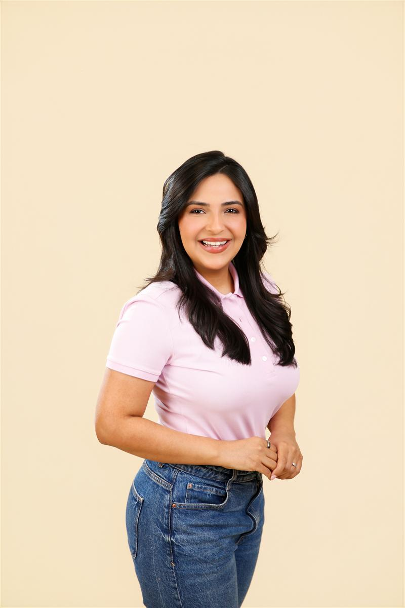

Thaysa Lippy quer mudar essa história. Vereadora de Manaus duas vezes eleita e mulher mais votada da cidade em 2024, ela é candidata a deputada federal pra levar a voz das mulheres, das crianças e das pessoas com deficiência do Amazonas ao Congresso.
Thaysa Lippy é vereadora de Manaus no segundo mandato. Em 2024, foi a terceira candidata mais votada da cidade — e a primeira entre as mulheres, com 16.116 votos.
Na Câmara Municipal, construiu mandato com marca clara: defesa das pessoas com deficiência e das famílias atípicas, proteção da infância e enfrentamento à violência contra a mulher.
Agora, é candidata a deputada federal pra que essas pautas tenham voz onde as leis nacionais são feitas — e pra que o Amazonas volte a ter uma mulher na Câmara dos Deputados.

Prioridade nacional pra diagnóstico precoce, acesso a terapias e inclusão escolar de verdade — com apoio às famílias atípicas.
Endurecimento do combate à violência e à exploração contra crianças e adolescentes, dentro e fora da internet.
Enfrentamento à violência doméstica, apoio à mulher que sustenta a casa e mais mulheres nos espaços de decisão.
Políticas de apoio às famílias amazonenses — da capital ao interior — com defesa dos valores e das necessidades reais de quem vive aqui.
Acompanhe a campanha de perto no Instagram ou escreva pra equipe. Toda mensagem é lida.
No dia 4 de outubro, deputada federal4400
E-mail: contato@thaysalippy.com.br